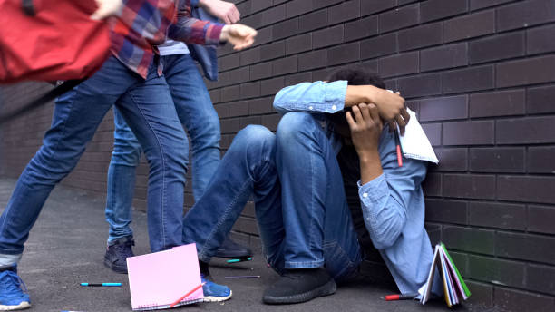

Articles
Memahami Bullying, Penyebab dan Cara Mengatasinya

Pengertian Bullying: Bullying adalah segala bentuk penindasan atau kekerasan yang dilakukan secara sengaja oleh satu orang atau kelompok yang lebih kuat. Perilaku ini dapat berupa ancaman, kekerasan fisik, penolakan, julukan, penggodaan, menyebarkan rumor, dan pengambilan barang pribadi.
Jenis Bullying: Perilaku bullying dibagi menjadi beberapa jenis, seperti verbal (seperti ejekan atau serangan kata) dan non-verbal (seperti tawa atau ejekan non-kata). Dampak Bullying: Bullying berdampak signifikan pada kesehatan mental korban, termasuk gangguan kecemasan, depresi, dan bahkan risiko bunuh diri.
Penyebab Bullying: Beberapa faktor penyebab bullying termasuk penampilan fisik, perbedaan ras, agama, jenis kelamin, orientasi seksual, dan kondisi fisik. Cara Mengatasi Bullying: Untuk mengatasi bullying, penting untuk meningkatkan kesadaran dan edukasi tentang dampak negatifnya, serta mendorong sikap empati dan dukungan dari orang dewasa. Selain itu, program-program sosialisasi di sekolah dan komunitas dapat membantu mencegah bullying.
Sumber: doktersehat.com
Bullying di Kalangan Remaja
Pengertian Bullying: Bullying adalah tindakan agresif yang dilakukan secara sengaja oleh satu orang atau kelompok terhadap individu lain yang dianggap lebih lemah. Tindakan ini bisa berupa fisik, verbal, atau psikologis, dan sering kali terjadi secara berulang.
Jenis-Jenis Bullying: Bullying Fisik: Melibatkan tindakan kekerasan fisik seperti memukul, menendang, atau mendorong. Bullying Verbal: Melibatkan ejekan, hinaan, atau ancaman. Bullying Sosial: Melibatkan pengucilan atau penyebaran rumor yang merusak reputasi seseorang. Cyberbullying: Melibatkan penggunaan teknologi digital untuk mengintimidasi atau menyakiti orang lain, seperti melalui media sosial atau pesan teks.
Penyebab Bullying: Beberapa faktor yang menyebabkan bullying di kalangan remaja antara lain: Lingkungan Keluarga: Kurangnya perhatian dan kasih sayang dari orang tua atau adanya kekerasan dalam rumah tangga. Lingkungan Sekolah: Kurangnya pengawasan dari guru dan staf sekolah, serta adanya budaya kekerasan di sekolah. Pengaruh Teman Sebaya: Tekanan dari teman sebaya untuk menunjukkan kekuatan atau dominasi. Media Sosial: Penggunaan media sosial yang tidak sehat dapat memicu perilaku bullying, terutama cyberbullying.
Dampak Bullying: Bullying memiliki dampak yang serius bagi korban, termasuk: Kesehatan Mental: Korban bullying sering mengalami stres, kecemasan, depresi, dan bahkan pikiran untuk bunuh diri. Prestasi Akademik: Korban bullying cenderung mengalami penurunan prestasi akademik karena merasa tidak aman dan tidak nyaman di sekolah. Hubungan Sosial: Korban bullying sering merasa terisolasi dan kesulitan membangun hubungan sosial yang sehat. Cara Mengatasi Bullying: Untuk mengatasi bullying, diperlukan kerjasama dari berbagai pihak, termasuk: Pendidikan dan Kesadaran: Meningkatkan kesadaran tentang dampak negatif bullying melalui program pendidikan di sekolah dan kampanye publik. Dukungan dari Orang Dewasa: Orang tua, guru, dan staf sekolah harus memberikan dukungan dan perhatian kepada korban bullying. Pengawasan Media Sosial: Mengawasi penggunaan media sosial oleh remaja dan memberikan edukasi tentang penggunaan yang sehat dan bertanggung jawab. Penegakan Aturan: Sekolah harus memiliki kebijakan yang jelas dan tegas terhadap perilaku bullying, serta memberikan sanksi yang sesuai bagi pelaku.
Sumber: kompasiana.com